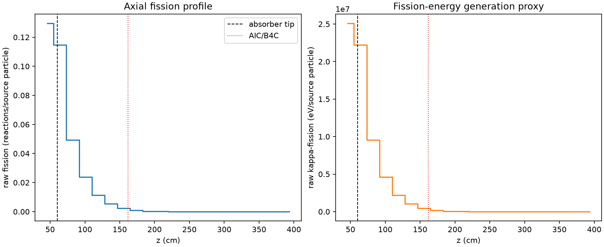
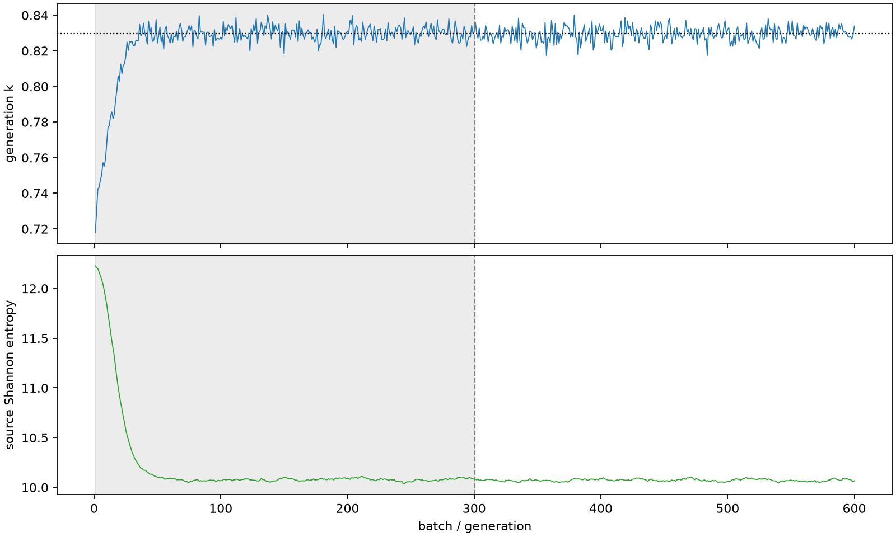

| field | value |
|---|---|
| experiment | V2-STAGE_256_OGRENCI_04-0022 |
| k | 0.8298258273529684 |
| MC standard error | 0.00017398069677947007 |
| seconds | 925.0256015539999 |
| acceptance | not_assessed |
| convergence | review_required |
Completed is output integrity only; physical and statistical review required. Zero tallies do not prove zero production or zero uncertainty.
| diagnostic | value |
|---|---|
| geometric fuel voxels | 5280 |
| zero fission tally voxels | 1330 |
| low signal fuel voxels | 2570 |
| low signal fission share | 0.0001762205570964036 |
| low signal kappa share | 0.0001762726792584127 |
| important fission share | 0.9500428141248006 |
| previous filter included | 2710 |
| duration estimate s | 1562.5173488400023 |
| actual minus estimate s | -637.4917472860025 |
| fission relative MC error | statistics |
|---|---|
| all_geometric_fuel | {"voxels": 5280, "positive_mean_voxels": 3950, "zero_mean_voxels": 1330, "undefined_relative_error_voxels": 1330, "median": 0.05164964421266581, "p95": 0.9197476814079473, "maximum": 1.0000000000000002} |
| low_signal | {"voxels": 2570, "positive_mean_voxels": 1240, "zero_mean_voxels": 1330, "undefined_relative_error_voxels": 1330, "median": 0.48017131686631426, "p95": 1.0, "maximum": 1.0000000000000002} |
| important_95pct | {"voxels": 1125, "positive_mean_voxels": 1125, "zero_mean_voxels": 0, "undefined_relative_error_voxels": 0, "median": 0.006443749872830967, "p95": 0.013355710874542539, "maximum": 0.015991664981278617} |
| outside_previous_filter | {"voxels": 2570, "positive_mean_voxels": 1240, "zero_mean_voxels": 1330, "undefined_relative_error_voxels": 1330, "median": 0.48017131686631426, "p95": 1.0, "maximum": 1.0000000000000002} |
| kappa_fission relative MC error | statistics |
|---|---|
| all_geometric_fuel | {"voxels": 5280, "positive_mean_voxels": 3950, "zero_mean_voxels": 1330, "undefined_relative_error_voxels": 1330, "median": 0.05154780723387021, "p95": 0.9199115134344548, "maximum": 1.0000000000000002} |
| low_signal | {"voxels": 2570, "positive_mean_voxels": 1240, "zero_mean_voxels": 1330, "undefined_relative_error_voxels": 1330, "median": 0.4792023741403585, "p95": 1.0, "maximum": 1.0000000000000002} |
| important_95pct | {"voxels": 1125, "positive_mean_voxels": 1125, "zero_mean_voxels": 0, "undefined_relative_error_voxels": 0, "median": 0.0064336490657421275, "p95": 0.013336253764302192, "maximum": 0.015966775204801244} |
| outside_previous_filter | {"voxels": 2570, "positive_mean_voxels": 1240, "zero_mean_voxels": 1330, "undefined_relative_error_voxels": 1330, "median": 0.4792023741403585, "p95": 1.0, "maximum": 1.0000000000000002} |
| axial bin | fission share | kappa-fission share |
|---|---|---|
| 1 | 0.38336368140154214 | 0.38330987251322624 |
| 2 | 0.33953734909234184 | 0.3395421870403687 |
| 3 | 0.14612558019769822 | 0.14615097360530382 |
| 4 | 0.07056179262890797 | 0.07057428033048457 |
| 5 | 0.033650490959633995 | 0.03365627640770927 |
| 6 | 0.015742655906149147 | 0.01574542759554964 |
| 7 | 0.0069651605701359 | 0.006966429092480045 |
| 8 | 0.002552112984776124 | 0.002552895663197933 |
| 9 | 0.0009450423681440726 | 0.0009453474731956563 |
| 10 | 0.00034864745523442036 | 0.0003487546644367664 |
| 11 | 0.0001280204171050025 | 0.00012806389665974527 |
| 12 | 5.3725002919032344e-05 | 5.373995240437672e-05 |
| 13 | 1.882785074357338e-05 | 1.883616404470468e-05 |
| 14 | 5.570666136780691e-06 | 5.573167418195196e-06 |
| 15 | 1.1045591603760732e-06 | 1.104841133083893e-06 |
| 16 | 2.3793937146850694e-07 | 2.3759238725680488e-07 |
| 17 | 0.0 | 0.0 |
| 18 | 0.0 | 0.0 |
| 19 | 0.0 | 0.0 |
| 20 | 0.0 | 0.0 |
Histories include the inactive-to-active transition at batch 300. kappa-fission approximates fission energy production, not total heat deposition.

